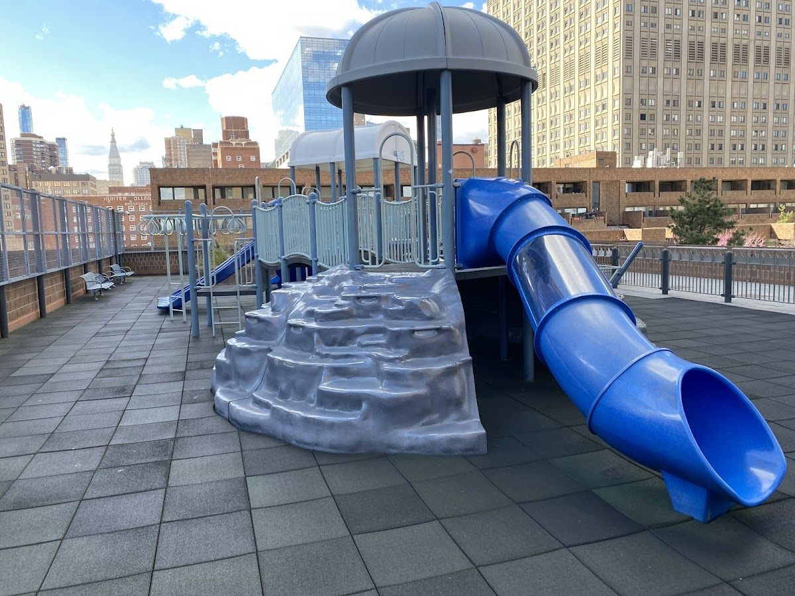
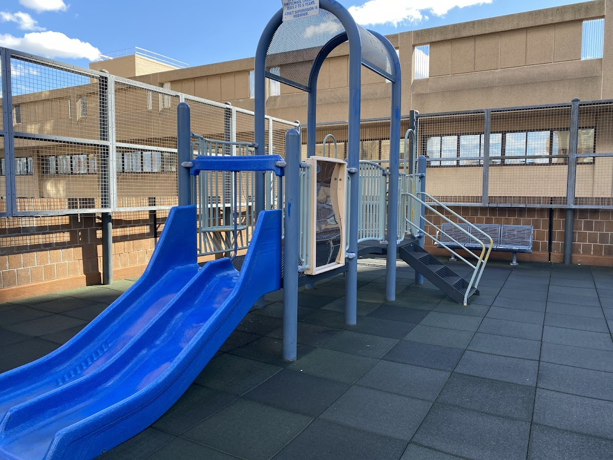
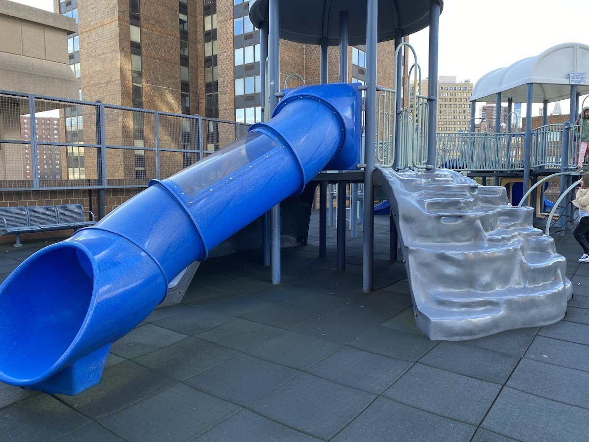

Shared spaces
Waterside
A residential complex located along the East River in Manhattan, offering waterfront living.
Background
Waterside Plaza was constructed in the 1970s on a platform over the East River. It was designed to address housing shortages and provide modern amenities. The complex includes residential towers, townhouses, and a plaza, making it a self-contained community.
Original AI-assisted background; not independently verified.
From the original map
The thing your supposed to do when you run out of land! Really human centric once your there but its sad that its next to the FDR. Waterside Plaza, a residential complex in NYC’s Kips Bay along the East River, was envisioned in 1961 by developer Richard Ravitch to address housing shortages for UN staff. Built on a platform over the river—supported by 2,000 steel piles sunk 80 feet into the riverbed—it opened in 1973, with completion in 1974. Designed by Davis, Brody & Associates, it features four brown-brick towers (31 to 37 stories) and duplex townhouses around a two-acre plaza, originally part of the Mitchell-Lama affordable housing program. The site, east of the FDR Drive, used landfill from England and was isolated, accessible only by a pedestrian overpass at 25th Street. It won a Construction Achievement Award in 1974 from the American Society of Civil Engineers. Plans for further waterfront expansion in the 1980s were scrapped, and Stuyvesant Cove Park took its place. Once home to a diverse mix of income groups, it’s now a luxury rental community managed by Brookfield Properties, known for its river views and self-contained feel.
Homes and shared residential spaces may be private. View from public streets unless entry is clearly permitted; map pins are reference points, not confirmed entrances.
Nearby places
Straight-line distances, not walking routes.
Discussion & corrections



Photo credits
Allanah40.73748, -73.97321 · Explore the surrounding area ↗